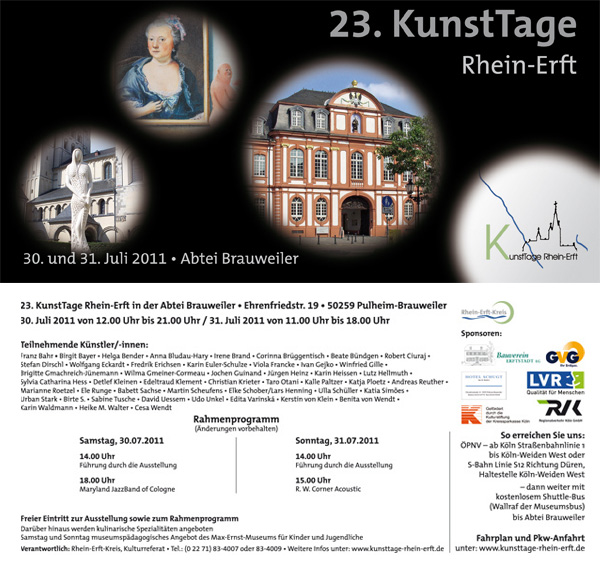

WILLKOMMEN AUF DEN SEITEN VON ART WE
WOLFGANG ECKARDT
- MALEREI UND FOTOGRAFIE -
AKTUELLE AUSSTELLUNGSTERMINE 2011
30.07.11 - 31.7.11
-KUNSTTAGE RHEIN-ERFT Abtei Brauweiler -Katalog

Link
KunstTage Rhein-Erft 2011